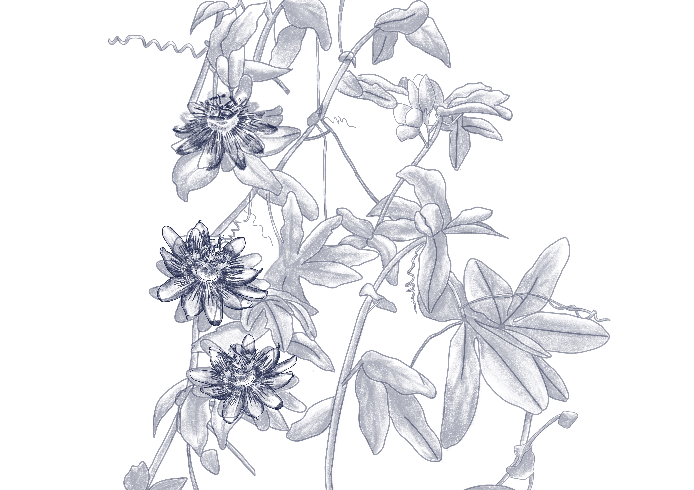

Passiflora caerulea
Mburucuyá

La Mburucuyá (Passiflora caerulea) es una especie de tipo flora perteneciente a la familia Passifloraceae.
Se distribuye en las zonas del sur de Sudamérica, incluyendo Brasil, Argentina, Bolivia, Paraguay, Chile y Uruguay, y es nativa de la zona de Punta del Diablo. Su estado de conservación es estable y no está catalogada como amenazada en su hábitat natural.
Su morfología se destaca por ser una planta trepadora leñosa, con zarcillos para sujetarse, hojas alternas y palmatilobadas con 5 lóbulos, flores vistosas que combinan blanco, azul y blanco azulado, y frutos en forma de baya ovalada de color anaranjado con pulpa rojiza, comestibles y usadas en la alimentación y medicina popular.
Su rol en el ecosistema es importante para la provisión de alimento a fauna polinizadora, como mariposas y abejas, además de formar parte de la estructura de matorrales y bordes de bosques, ayudando en la conectividad ecológica.